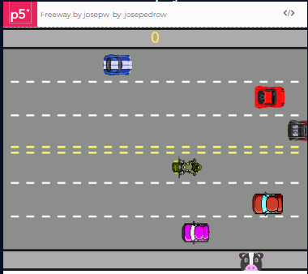
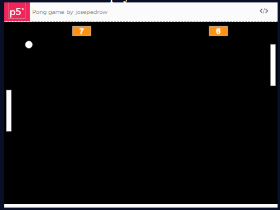
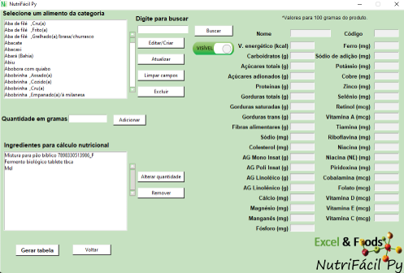

José Pedro Wojeicchowski
Desenvolvedor Python e Web Full Stack em contínua formação!
Sou Engenheiro de Alimentos de forma√ß√£o e amante de tecnologia. Procuro desenvolver solu√ß√µes para a minha área usando linguagem de programa√ß√£o. Tenho me dedicado nos √∫ltimos anos no estudo de Python. Iniciei uma forma√ß√£o de Web Full Stack, associado ao Programa Desenvolve 2022 do Grupo Boticário. Por meio da Alura, a cada semana aprendo mais e mais sobre HTML, CSS e JavaScript üöÄ!
O que eu já fiz...
Freeway
Esse é uma releitura de um clássico game chamado "Freeway"! Para o desenvolvimento do game foi usado o p5.js editor. Clique para jogar! 
Pong
Esse é uma releitura de um clássico game chamado "Pong"! Para o desenvolvimento do game foi usado o p5.js editor 
NutriFácil
Programa para elaboração de tabelas nutricionais. 